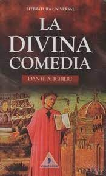

LA DIVINA COMEDIA

Infierno:
La "Divina Comedia" de Dante Alighieri comienza con el protagonista, Dante mismo, encontrándose
perdido en un oscuro bosque, que simboliza la vida en pecado y alejada de la rectitud. Pronto
aparece el poeta romano Virgilio, enviado por Beatriz (el amor idealizado de Dante), para guiar a
Dante a través de las profundidades del Infierno. La travesía lleva a Dante a través de nueve
círculos infernales, cada uno destinado a castigar un pecado específico. En estos círculos, Dante
encuentra a diversas figuras históricas y mitológicas, así como a personas que han tenido un impacto
directo en su vida. El viaje culmina en el centro del Infierno, donde Satanás reside en el hielo.
Dante y Virgilio emergen finalmente en el hemisferio sur, bajo el Monte Purgatorio.
Purgatorio:
Tras escapar del Infierno, Dante y Virgilio inician su ascenso por el Monte Purgatorio. Aquí, las almas expían sus pecados antes de alcanzar la redención. El Purgatorio está compuesto por siete terrazas, cada una correspondiente a un pecado capital. En cada nivel, Dante interactúa con almas penitentes y aprende lecciones morales. Al llegar a la cima, Beatriz reemplaza a Virgilio como guía, llevando a Dante a través de las esferas celestiales hacia el Paraíso. Este tramo de la obra se centra en la idea de la purificación y la renovación espiritual, preparando a las almas para su ascenso final hacia la gracia divina.
.jpg)
Paraíso:
En la tercera y última parte de la "Divina Comedia", Dante asciende a través de los nueve cielos del Paraíso, representando la progresión espiritual hacia la presencia de Dios. Cada cielo alberga a almas que han alcanzado la salvación, desde personajes bíblicos hasta santos y sabios. A medida que Dante avanza, experimenta la belleza celestial y la perfección divina. Su guía, Beatriz, le proporciona conocimiento y revelaciones sobre la naturaleza de Dios y la creación. El viaje culmina en la visión directa de la Trinidad y la contemplación final de la divinidad. Dante, finalmente, alcanza la máxima comprensión y la unión con lo divino, simbolizando la redención completa y la llegada a la beatitud eterna.
.jpg)